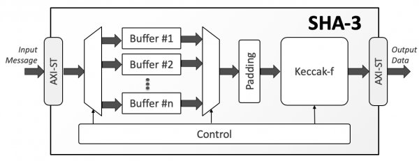

The Keccak algorithm is the work of Guido Bertoni, Joan Daemen (who also co-designed the Rijndael cipher with Vincent Rijmen), Michaël Peeters, and Gilles Van Assche.
Keccak256 is a secure hash algorithm (SHA) used in Ethereum, many contracts use it to do things. Using the HashMeDaddy smart contract, now anyone can input a string and use this hash function to return a hashed output.
Let's think of some potential use cases... Imagine someone wanted to make a public guess about something but they don't want to reveal their guess to anyone. They could hash their guess and tweet it. Then when it came time to reveal, they could prove what their guess was by retweeting the unhashed guess with the original hash. Anyone could verify it by running the guess thru the hash function, and it would output the same answer!
Every input will always have the same output. Even though it's irreversible, it's also replicable. If you change one letter you will get a different hash. As well, you can feed it any length input and it will give you a fixed length output.
Here's a fun example: 0xb364479f610f498e739c4895452687f9fdbdf0cb9e0cc4ecda66a128575e24c9
That's a hash of the street I live on. If you figure out what it is, it will be trivial for you to reproduce that hash. But you definitely won't be able to guess it, or reverse the hash process. Cryptography is cool !
Additional information...